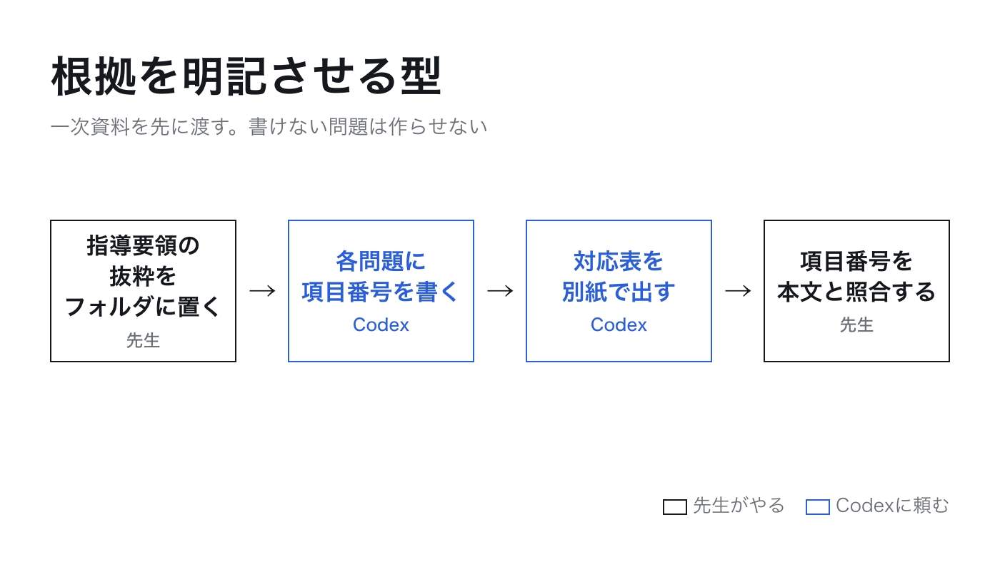
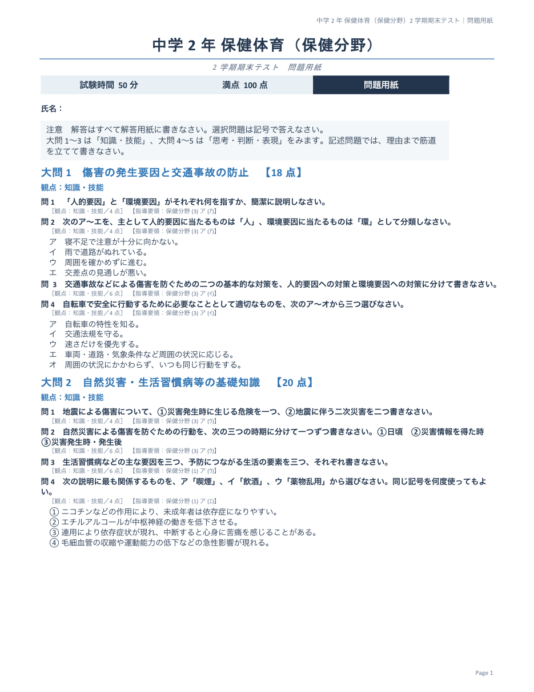
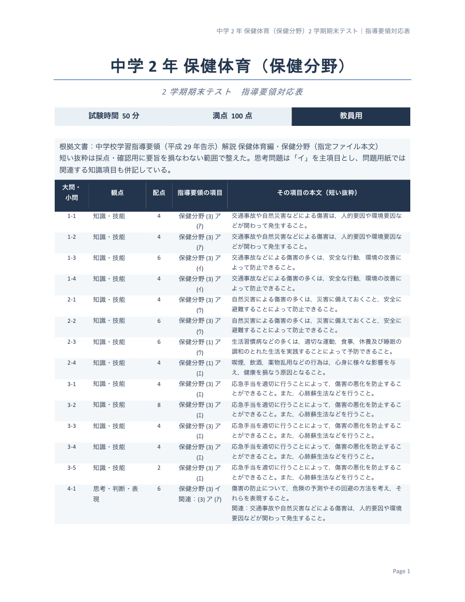

相談の中身

一次資料をフォルダに置く
学習指導要領は国の告示で、解説は文部科学省の刊行物です。どちらも文部科学省のサイトで公開されていて、出典を書けば使えます。抜粋ファイルの先頭に出典を1行書いておきます。教科書の本文とは扱いが違うところです。
どの学年で何を扱うか
解説の226ページ「内容の取扱い」に、保健分野の学年配当が書いてあります。範囲メモを書く前にここを見ます。
| 内容 | 学年 |
|---|---|
| (1) 健康な生活と疾病の予防 ア(ｱ)(ｲ) | 第1学年 |
| (1) 健康な生活と疾病の予防 ア(ｳ)(ｴ) | 第2学年 |
| (1) 健康な生活と疾病の予防 ア(ｵ)(ｶ) | 第3学年 |
| (1) 健康な生活と疾病の予防 イ | 全学年 |
| (2) 心身の機能の発達と心の健康 | 第1学年 |
| (3) 傷害の防止 | 第2学年 |
| (4) 健康と環境 | 第3学年 |
中学2年 保健体育（保健分野） 2学期期末テスト 範囲メモ
傷害の防止（交通事故や自然災害などによる傷害の発生要因／交通事故などによる傷害の防止／自然災害による傷害の防止／応急手当の意義と実際）
健康な生活と疾病の予防のうち、2年で扱う内容（生活習慣病などの予防／喫煙、飲酒、薬物乱用と健康）
授業で扱ったこと：応急手当は心肺蘇生法とAEDの使い方、包帯法・止血法の実習をした。自然災害は地震と大雨・洪水を扱った。
生徒の様子：用語は覚えているが、「なぜその行動が必要か」を自分の言葉で説明するところでつまずく子が多い。
頼んだ言葉の原文
このフォルダの「hani.txt」に書いた範囲で、中学2年 保健体育（保健分野）の2学期期末テストを作ってください。
同じフォルダの「shidou_youryou_hoken_bunya.txt」は、中学校学習指導要領（平成29年告示）解説 保健体育編の保健分野の本文です。問題は必ずこの文書に書かれている内容に基づいて作り、教科書や問題集の問題をそのまま使わないでください。
50分・100点満点
大問は5つ。前半は「知識・技能」、後半は「思考・判断・表現」の問題にして、各問題に観点と配点を書く
各問題の末尾に、学習指導要領のどこに基づくかを【指導要領：保健分野 (3) ア (ｴ)】の形で必ず書く。指導要領のどこに基づくか書けない問題は作らない
問題用紙、解答用紙、模範解答と配点表、指導要領対応表の4つを、それぞれWordファイル（.docx）で作る。対応表は「大問・小問／観点／配点／指導要領の項目／その項目の本文（短い抜粋）」の表にする
応急手当は実習をしているので、手順とその理由の理解を問う問題を入れる
すべての問題の答えを、指導要領の本文と照らして確かめてから模範解答を書く
生徒の名前など個人の情報は入れない（氏名の記入欄だけ作る）
できたら、どんな問題を作ったかと、どの指導要領の項目を使ったかを日本語で短く報告してください。
すると何が起きるかCodexが範囲メモと指導要領の抜粋を読み、問題を決め、答えと抜粋を本文と照らしてから、Wordファイルを4つ作ります。私のときは約17分でした。
Codexの返事とできあがったもの
作成しました。50分・100点、大問5題、知識・技能60点／思考・判断・表現40点です。
- 01_問題用紙.docx
- 02_解答用紙.docx
- 03_模範解答と配点表.docx
- 04_指導要領対応表.docx
交通事故・自然災害の危険予測、生活習慣病、喫煙・飲酒・薬物乱用、応急手当の手順と理由を扱っています。使用項目は、保健分野の「(3) ア (ｱ)〜(ｴ)・(3) イ」と「(1) ア (ｳ)(ｴ)・(1) イ」です。全21小問の正答と抜粋を指定本文と照合し、配点合計・観点・表幅・個人情報の不記載を検証しました。
なお、documentsスキルの標準レンダリング環境が不足し、Microsoft Wordの操作も承認されなかったため、画像による全ページの目視確認だけは実施できていません。Word文書の構造検査は完了しています。


根拠の表記を照合する
機械の照合
- 問題用紙の【指導要領：…】を全部拾う。21問すべてに表記があり、存在しない項目や、2年で扱わない項目は0件
- 対応表の「本文の抜粋」が、抜粋ファイルの本文にそのまま存在するか調べる。29の文がすべて本文と一致
目の照合
このフォルダにある4つのWordファイル（01_問題用紙・02_解答用紙・03_模範解答と配点表・04_指導要領対応表）を直してください。元のファイルは残し、直したものは「_修正版」を付けた名前で保存してください。
問題用紙の問題文に「指導要領に示されている」という言葉が入っている（大問1の問4、大問3の問2）。生徒は指導要領を読まないので、その言葉を使わずに同じことを問う文に直す。【指導要領：…】の表記はそのまま残す
問題用紙と解答用紙で、大問ごとに改ページしない。問題用紙は3ページ以内、解答用紙は3ページ以内に収める
解答用紙の記述欄は、下線（＿＿＿）ではなく、罫線で囲んだ枠にする。枠の高さは、模範解答の文の長さに合わせる（1行の答えは1行分、3文の答えは3行分）
問題用紙の氏名欄の横にある「得点：／100」は消す（得点欄は解答用紙だけでよい）
直したら、変えたところを日本語で短く報告してください。
すると何が起きるか私のときは約15分で、4つとも「_修正版」の名前で保存されました。報告は「指定の2問を言い換え、得点欄を削除。3ページ構成に調整」「大問ごとの改ページを廃止し、下線を解答量に応じた罫線枠へ変更。3ページ構成に調整」。Wordで開くと、問題用紙は6ページから3ページ、解答用紙は5ページから3ページになり、「指導要領に示されている」の2か所は「適切なものを」「心肺蘇生法で行う四つの方法を」に変わっていました。根拠の表記21件は、直したあとも全部残っていました。
見本では、生徒が見る問題用紙にも【指導要領：…】の表記を残しています。相談してくれた先生が「テストの中に書いておきたい」と言っていたからです。生徒には見せず、教員用の対応表だけに残したいときは、「問題用紙の【指導要領：…】の表記を全部消してください。対応表はそのまま」と1行頼めば済みます。
機械の照合は、Codexに頼めば作ってくれます。「問題用紙と対応表にある【指導要領：…】の表記を全部抜き出して、shidou_youryou_hoken_bunya.txt にある項目と学年配当に照らして一覧にしてください」で足ります。目の照合だけは先生の仕事です。
型のまとめ
- 文部科学省の解説PDFから、その教科・分野のページを抜き出してフォルダに置く。先頭に出典を1行
- 解説の「内容の取扱い」で学年配当を確かめて、範囲メモを書く
- 頼み方に「各問題の末尾に【指導要領：…】を必ず書く。書けない問題は作らない」を入れる
- 対応表を別紙で出させる。項目と本文の抜粋が並ぶ形
- 機械で表記を照合し、目で抜粋を読んでから配る
- 去年までの自作のテストがあれば、フォルダに入れて出題の仕方と紙面をそれに寄せる（第4回の頼み方4）。根拠の表記は残したまま、形だけ学校の型に合わせる
- 体育理論
- 同じ解説 保健体育編の「H 体育理論」（189ページから）を抜き出す。学年ごとに(1)(2)(3)が分かれている
- 他の教科
- 解説はすべて教科ごとに公開されている。国語編・社会編・理科編など、その教科の「各学年の目標及び内容」のページを抜き出せば同じ型で動く
- 表記の形
- 【指導要領：保健分野 (3) ア (ｴ)】のように、内容番号・ア／イ・小項目の3段で書かせる。学校で使っている表記があれば、頼み方の見本をそれに合わせる
見本の4つのWordファイルと、範囲メモ、指導要領の抜粋ファイルは、リポジトリの sample/hoken フォルダに置いています。中学2年の保健分野なら、自分のクラス用に直して使ってかまいません。配る前に、全問を自分で解き、対応表を自分の目で読んでください。
自分の教科の解説PDFを文部科学省のサイトから開き、次のテストの範囲にあたるページ番号を控えてください。それをCodexに「このPDFの◯ページから◯ページの本文をテキストファイルにして」と頼めば、一次資料の準備は終わりです。